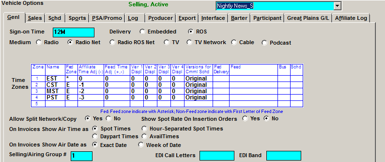

Vehicle Types
A vehicle’s Type will determine how it is sold and scheduled. There are several different types of vehicles available.
Conventional Vehicle
Every spot sold in a Conventional vehicle is scheduled into that vehicle. Conventional Vehicles produce logs and their information is shown on orders and invoices. They can be sold as part of packages or independently.
Selling Vehicle
This is a vehicle that is used for selling, maintaining inventory, and scheduling/trafficking purposes only. Selling vehicle information is shown on the orders and the invoices. Airing vehicle avails are linked to the Selling vehicle avails for log generation. One Selling vehicle can have one or multiple Airing vehicles, allowing a spot to be sold and scheduled once, but air across multiple vehicles and times. Traffic Site Options -> General has an option to turn on if using Selling vehicles. Selling vehicles can be sold as a package or independently.
Each Selling and Airing vehicle must have a group number which ‘links’ them together in the Vehicle -> Options -> General screen.

Airing Vehicle
This is a vehicle that only produces logs for selling vehicles. Spots in the airing vehicle are linked to the selling vehicle. Airing vehicles must have programming defined, but they do not appear on inventory reports. They do not appear on the order and are not trafficked. There is a Vehicle->Option->Log question that allows you to enter copy for the airing vehicle that will show on the log. The invoice shows the Selling vehicle spots and the Selling vehicle copy. There is no limit to the number of Airing vehicles that can be associated with a Selling vehicle.
Each Selling and Airing vehicle must have a group number which ‘links’ them together.
Sports Vehicle
A Sports vehicle is a vehicle whose inventory and scheduling is based on a season with event numbers, rather than an exact date and time. This allows an event season to be sold before the actual dates and times of the events are known. You can order a number of spots on a specific event, or have a number of spots distribute evenly across a week.
There are specific questions in the Vehicle -> Options -> Sports screen that dictate how each Sports vehicle will handle spot moves and bonus spots.
NTR Vehicle
NTR vehicles have no inventory. They are used to order Non-Traditional Revenue, or Non-Airtime/Broadcast revenue. Typical NTR vehicles are Web, Live Reads, Talent, and Various Fees. NTR vehicles can be billed throughout the month, and can either produce a separate invoice, or be included with the airtime portion.
Rep Vehicle
Rep Vehicles have no inventory and do not produce logs. Spots for Rep Vehicles are booked on the contract and insertion orders are sent to producers or affiliates. Once you receive the information back from the affiliate, you can produce an invoice for the client listing the total spots aired for the order.
Log Vehicle
This is a vehicle that can be used to create a single log from multiple Conventional, Airing, or Sports Vehicles.
Once you define a Log vehicle, you can associate Conventional, Airing and Sports vehicles with it by selecting the log vehicle from the “Log Vehicle” dropdown on the Conventional, Airing, or Sports vehicles that you want to make part of the Log vehicle.
Merge/Separate
The vehicles that make up a log vehicle have three additional settings available on the “Log” tab: Traffic Merge/Separate, Affiliate Merge/Separate, and Affidavit Merge/Separate, which determine whether the vehicles are merged or separate on the Traffic log, the agreement, and the web log (respectively).

- Traffic Merge: The log vehicle will appear on the Traffic Logs screen, and the spots from these vehicles will be merged onto the log vehicle when the log is generated. (The individual vehicles that make up the log vehicle will not be shown on the Traffic Logs screen.)
- Traffic Separate: The vehicles that make up the log vehicle will appear on the Traffic Logs screen, and the logs will be generated separately by vehicle, not by the log vehicle (the log vehicle will not appear on the Logs screen in this case).
- Affiliate Merge: The agreements will be created for the Log vehicle (the vehicles that make up the log vehicle will not appear in the agreement screen vehicle list).
- Affiliate Separate: The agreements will be created for the vehicles that make up the log vehicle.
- Affidavit Merge: The web affidavit will be for the log vehicle, with the spots from the vehicles that make up the log vehicle merged together into one web log.
- Affidavit Separate: The web affidavits will be for the vehicles that make up the log vehicle, and each must be posted separately. The spots from the vehicles that make up the log vehicle are not combined with this option.
There are restrictions on how these settings can be configured. If Traffic is set to “Separate”, the Affiliate setting must also be set to “Separate.” If the Affiliate setting is set to “Merge”, the Affidavit cannot be set to “Separate”.
Multi-Vehicle Log
The Multi-Vehicle Log feature makes it possible to merge the program and commercial elements from one vehicle into one or multiple other vehicles. The Multi-Vehicle Log feature differs from the Log vehicle feature because log vehicles allow multiple vehicles to be merged into a single log, while the Multi-Vehicle Log feature merges spots (and program elements) from one vehicle into one or several vehicles.
As an example of how this could be used, there might be a “Network” sports vehicle with spots that are merged in with the spots on two other “Affiliate” vehicles. The two “Affiliate” vehicles will have their own spots and the “Network” vehicle spots appearing on the Traffic log. (Note: This feature can be used with the Remote Spot Export that generates traffic spots for exporting to a second Affiliate database.)
To configure vehicles to use the Multi-Vehicle Log feature:
- Enter the new vehicles on the Vehicles screen as Conventional or Sports type vehicles. Important to note: When configuring vehicles to use this feature, the vehicles must be of the same type (sports or conventional) in order for it to be possible to link them together in this way.
- For each vehicle that will have spots from the other “Network” vehicle merged onto it, in the “Multi-Vehicle Log” field, select the “Network” vehicle (the source of the merged spots).
- When Traffic logs are generated for the “Affiliate” vehicle, it will include the “Affiliate” vehicle spots and the “Network” vehicle spots. By defining the “Network” vehicle in the “Multi-Vehicle Log” field for multiple “Affiliate” vehicles, the “Network” spots will be merged into multiple vehicles.
For example, in the first picture below, the vehicle “Affiliate 1” has the vehicle “Network Sports” defined in the “Multi-Vehicle Log” field. Spots from the “Network Sports” vehicle will be merged into “Affiliate 1” (along with the spots in “Affiliate 1”).
Continuing with the example, in the picture below, the vehicle “Affiliate 2” also has the vehicle “Network Sports” defined in the “Multi-Vehicle Log” field. Spots from “Network Sports” will also be merged into “Affiliate 2” (along with the spots in “Affiliate 2”).
Package Vehicle
This is a group of conventional and/or selling vehicles that are bundled together to be sold as a single entity. Package Vehicle information is shown on the order and the invoice, while spots book into the individual Vehicles.
Package Types
There are two types of packages Real and Virtual.
- Virtual Package
- Package spot counts are independent of the total spot count that makes up the package
- Virtual spots and times will appear on the invoice
- Real Packages
- Package spot count equals the number of spots that make up the package
- The actual hidden vehicles and true air times/dates will appear on the invoice
Simulcast Vehicle
This is a vehicle whose spots are fed from, and are identical to, another conventional or selling vehicle. The convention/selling vehicle or ‘parent’ vehicle is where the spots, cost, and copy are defined. The order only shows the ‘parent’ vehicle. You can enter a line comment indicating the additional simulcast vehicles. There is only one log produced for the parent vehicle. The Simulcast vehicles will show on the invoice/affidavit with ‘bonus’ as the rate.
To set up a simulcast vehicle, enter the ‘parent’ vehicle in the “Log Vehicle” box. In this example, the 24 Music Log vehicle will receive 100% of its spots (and their placement) from the Top 40 Countdown.
Vehicle Groups
A Vehicle Group is an identifier to group vehicles together. The ‘vehicle groups’ that can be defined are Market, Research, Sub-Company, Format and Subtotals. These groups are ways to classify vehicles together for reporting purposes.
- Market is the area that this vehicle is reaching. If you have the ‘market’ groups on, you will be asked which group you want to use on the Proposal, Order, Spot and Log screens
- Research is either Owned or Repped
- Sub company is a way to group together vehicles whose accounting revenue should be reported together
- Format is the type of content the vehicle airs: Comedy, AOR, etc.
- Subtotals are a further way of classifying together a group of vehicles for reporting
Creating a Vehicle by Modeling
If a new vehicle shares the characteristics of an existing vehicle, you can create a new vehicle by modeling the original vehicle.
Select “New” from the vehicle name dropdown and press tab.
Select the vehicle from which you wish to model and press tab.
This will copy the original vehicle’s information into all of the appropriate fields. Enter the new Vehicle name and click Save.
Once saved, you will have to enter the Participant information.
Act 1 Lineup
On version 7.1 and above, when the "Act 1 Codes" checkbox in Traffic Site Options is checked on, an “Act 1 Lineup” field will appear on the Vehicle List screen. For Conventional, Selling, Sports, Rep, and Package vehicles, the default Act 1 Lineup name for a vehicle can be entered in this field.
When a contract line is entered using this vehicle, if there's a default Act 1 Lineup name defined, it will be automatically entered in the Act 1 Lineup field on the Override popup.
In addition, the Act1 Lineup can be used as a way to allow the Act 1 research import to import data with vehicle codes longer than five characters, up to eleven characters. If the Act 1 Lineup code feature is enabled in Traffic Site Options, and the station code (limited to 5 characters) defined for a vehicle does not match the vehicle abbreviation on an Act 1 import file, and the vehicle name in Counterpoint does not match the vehicle name on an Act 1 import file (the name that appears after the abbreviation and the colon), then if there's an Act 1 Lineup code in the "Act 1 Lineup" field for a vehicle (which can be as long as 11 characters), and that matches the abbreviation on the Act 1 import file, then the data will apply to that vehicle.
Additional Vehicle Screen Information
The contact information is used for this vehicle if it is a rep vehicle. It is shown on the Delinquent Affidavit Report and it can be viewed on the Posting Screen.
The vehicle address is shown:
- On the certificate of performance
- Instead of the lock box on the invoices and statements (Site Options Invoice setting)
Hub
On Hub-Based systems, a “Hub” field will be shown near the “Active or Dormant” field. A vehicle can be defined as being part of a hub by selecting it from the dropdown in the Hub field on this screen. This makes it so that salespeople that are defined as having access to that hub will be able to view and use this vehicle (and any other vehicles that are part of this hub) on the Proposal screen.